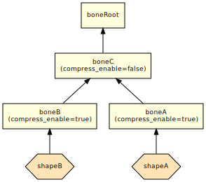
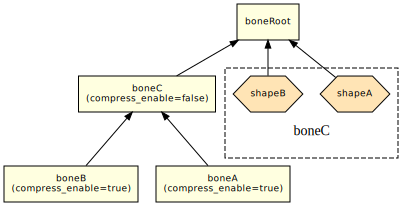
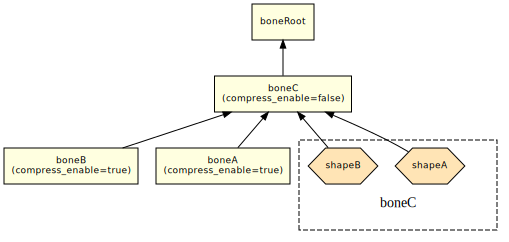

プログラマー向けニュース
NintendoSDK 5.1.0 で行われたプログラマー向けの変更点を紹介します。
- プログラマー向けニュース
- 全般
- nn::g3d ニュース
- 3D テクスチャーコンバーターでリサイズをパーセンテージ指定できるように
- アサインユーティリティーで既存のシェーダーパラメーター値を引き継ぎつつ、異なるシェーダーを割り当てることができるように
- シェイプ圧縮機能の改善
- リジッドボディーからリジッドスキニングへの変換機能の改善
- nn::vfx ニュース
- nn::ui2d ニュース
- nn::font ニュース
- nn::atk ニュース
- nn::spy ニュース
全般
bc1 / bc2 / bc3 フォーマットのテクスチャーに変換する際の問題について
NintendoSDK 5.0.0 から導入された、新しい bc1 / bc2 / bc3 フォーマットのエンコーダー（更新履歴の、5-0-0S56: (TOOL) テクスチャーコンバーターで、bc1 / bc2 / bc3 フォーマットに変換する際の品質の改善）に関連して起こる問題と対処方法について案内します。
問題は大きく 2 つあり、2 つ同時に対処する方法は、環境変数 NINTENDO_TEXTURE_CONVERTER_NVTT_BC123 を値 0 で定義した状態で NintendoWare のツールを使用する方法だけです。
問題１：非対応 GPU で bc1 / bc2 / bc3 フォーマットのテクスチャーに正しく変換できない
- bc1 / bc2 / bc3 フォーマットのエンコーダーが変更された影響で、NVIDIA の Kepler 世代以降の GPU でないと正しく変換できません
- NVIDIA 以外の GPU なら自動的に CPU で変換しますが、NVIDIA の非対応 GPU では、エラー表示などなく、テクスチャーが不定な値で出力されます（たとえば、真っ黒なテクスチャーとして出力されます）
対処方法
- 以前のエンコーダーを使用する（環境変数 NINTENDO_TEXTURE_CONVERTER_NVTT_BC123 を値 0 で定義します）
- 3D テクスチャーコンバーターのオプションで GPU エンコーディング を OFF にする（--gpu-encoding false）
- NintendoWare の各モジュールからこのオプションを指定する方法については、それぞれのマニュアルを参照してください
- Kepler 世代以降の GPU を使用する（NintendoSDK では Maxwell 第1世代以降を推奨しています）
NintendoSDK 5.2.0 で予定している対応
- 3D テクスチャーコンバーターで、非対応 GPUを正しく判定できるようにします
- 3D テクスチャーコンバーターで、--gpu-encoding（GPU でエンコードするかどうか）オプションを拡張します
- --gpu-encoding true が指定されている場合、非対応 GPU ならエラー（NVIDIA 以外の GPU なら常にエラー）
- --gpu-encoding false が指定されている場合、常に CPU でエンコード（これまで通り）
- --gpu-encoding auto が指定されている場合、可能なら GPU でエンコードし、不可能なら CPU でエンコード（これまでの true の動作）
- --gpu-encoding オプション自体が指定されていない場合（デフォルト）は、--gpu-encoding true が指定されている場合と同じ動作
- NintendoWare の各モジュールで上記の --gpu-encoding を利用できるような対処をとります
問題２：bc3 フォーマットで A 成分の圧縮品質が低下する
- bc3 フォーマットのエンコーダーが変更された影響で、A 成分が 0 だったピクセルが 0 でない微小な値になる場合があります
次の画像では違いをわかりやすくするため、A 成分（0～255）をしきい値 1 で 2 階調化しています
対処方法
- 以前のエンコーダーを使用する（環境変数 NINTENDO_TEXTURE_CONVERTER_NVTT_BC123 を値 0 で定義します）
NintendoSDK 5.2.0 で予定している対応
- 新しいエンコーダーで、bc3 フォーマットの A 成分の圧縮品質を改善します
 nn::g3d ニュース
nn::g3d ニュース
3D テクスチャーコンバーターでリサイズをパーセンテージ指定できるように
3D テクスチャーコンバーター の --resize-w、--resize-h オプションで入力画像のパーセンテージでサイズを指定することができるようになりました。
アサインユーティリティーで既存のシェーダーパラメーター値を引き継ぎつつ、異なるシェーダーを割り当てることができるように
アサインユーティリティー の assign サブコマンドに --keep-existing-values というオプションを追加しました。このオプションを指定すると入力モデル中間ファイルにもともと含まれていたシェーダーパラメーターの値を ID と型情報が一致するものについて、新しく割り当てるシェーダーに引き継ぐようになります。
シェイプ圧縮機能の改善
中間ファイルオプティマイザーのシェイプ圧縮時に --ignore-skinning-count オプションを指定した際に、もともと連続していたシェイプだったにも関わらず、スキニング方式が異なる事により、シェイプ間に隙間が生じる問題があり、これを改善しました。この変更により、連続するシェイプ間のスキニング方式が統一されるようになりますが、その代わりにデータサイズが増える場合があります。
リジッドボディーからリジッドスキニングへの変換機能の改善
中間ファイルオプティマイザーのリジッドボディーからリジッドスキニングへの変換機能を使用した際に、圧縮可能(compress_enable=true)に設定されたボーンに関連するリジッドボディーのシェイプはすべてルートボーンに関連付けられる仕様になっていたため、リジッドスキニングに変換されたシェイプに対してボーンビジビリティーアニメーションを適用するにはそのシェイプに紐づくボーンを圧縮不可(compress_enable=false)に設定するしか方法がありませんでしたが、これだと、変換されたシェイプに対してシェイプ圧縮が行えませんでした。
変換されたシェイプが親ボーンを辿って最初に見つかった圧縮不可のボーンに関連付けするように仕様変更することで、圧縮不可に設定したボーン以下に所属するシェイプ同士のシェイプ圧縮が効くようになりました。以下に例を示します。
| 変換前 |

|
| これまでの変換結果 |

|
| NintendoSDK 5.1.0 以降の変換結果 |

|
 nn::vfx ニュース
nn::vfx ニュース
特にありません。
 nn::ui2d ニュース
nn::ui2d ニュース
特にありません。
 nn::font ニュース
nn::font ニュース
特にありません。
 nn::atk ニュース
nn::atk ニュース
サウンドスレッド、タスクスレッドのスレッド優先度のデフォルト値変更
サウンドスレッド、タスクスレッドのスレッド優先度のデフォルト値を以下の表のように変更し、優先度を引き下げる修正を行いました。
| スレッド優先度 | 変更前 | 変更後 |
|---|---|---|
| サウンドスレッドのスレッド優先度 (nn::atk::SoundSystem::SoundSystemParam::DefaultSoundThreadPriority) |
nn::os::HighestThreadPriority | 4 |
| タスクスレッドのスレッド優先度 (nn::atk::SoundSystem::SoundSystemParam::DefaultTaskThreadPriority) |
nn::os::HighestThreadPriority | 3 |
デフォルトのスレッド優先度を使用していて、 5.1.0 以前のスレッド優先度に戻したい場合は、 nn::atk::SoundSystem::SoundSystemParam::soundThreadPriority および nn::atk::SoundSystem::SoundSystemParam::taskThreadPriority を nn::os::HighestThreadPriority に引き上げる必要がある点にご注意ください。
 nn::spy ニュース
nn::spy ニュース
特にありません。